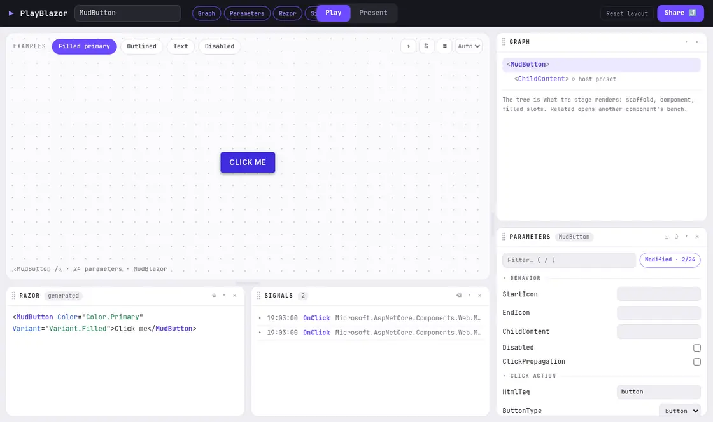

Every [Parameter] becomes a control.
Point PlayBlazor at any Blazor component library and get a live playground: typed controls, the matching Razor markup and an event log, with no stories to write by hand.
Runs .NET in your browser: the first visit downloads 4 to 6 MB, later visits load from cache.
Also live for Fluent UI Blazor and DaisyBlazor, or compare all three.
Pick a library to explore
The same playground, pointed at three component libraries. PlayBlazor itself references none of them; each one is simply what its showcase demonstrates.
-
MudBlazor
65components- Design system
- Material Design
- Package
- MudBlazor 9.11
- First load
- about 6.1 MB
-
Fluent UI Blazor
97components- Design system
- Fluent Design System
- Package
- Fluent UI Blazor 5.0
- First load
- about 4.3 MB
-
DaisyBlazor
127components- Design system
- daisyUI 5 on Tailwind CSS 4
- Package
- DaisyBlazor 0.6
- First load
- about 4.5 MB
The real one, running in the MudBlazor showcase

The MudButton explorer after picking the Filled primary example and clicking the button twice: the live specimen, the Razor markup that produces it, and both clicks in the Signals panel, PlayBlazor’s event log. The Share button turns the current state into a link.
Add it to your own Blazor app
Register the services, then drop one component into any page. Nothing to write per component.
dotnet add package PlayBlazor
One package. Its only dependency is Microsoft.AspNetCore.Components.Web.
Read the setup guide.
// Program.cs builder.Services.AddPlayBlazor(); @* One component, in any page *@ <PlaygroundView Component="typeof(MudButton)" /> @* Or everything a library exposes *@ <PlaygroundExplorer Assemblies="@(new[] { typeof(MudButton).Assembly })" />